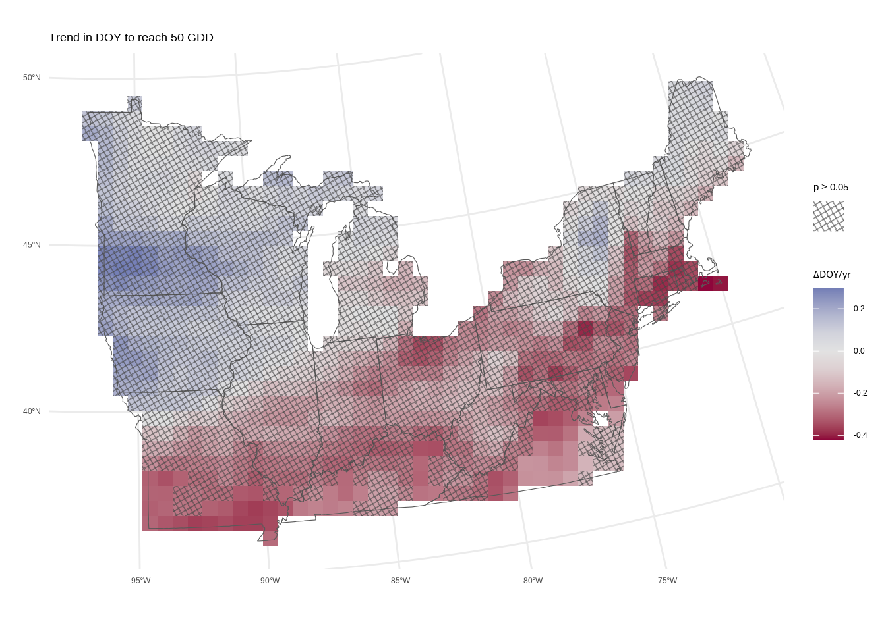
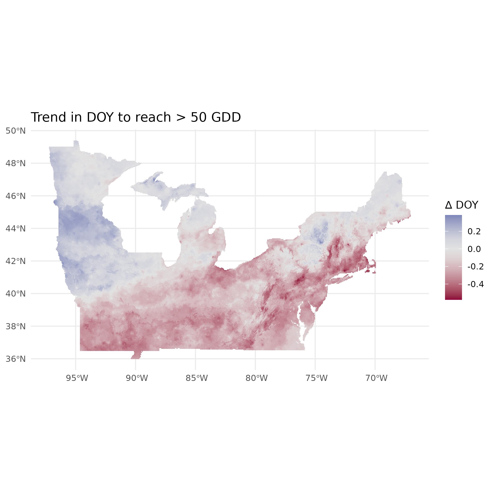
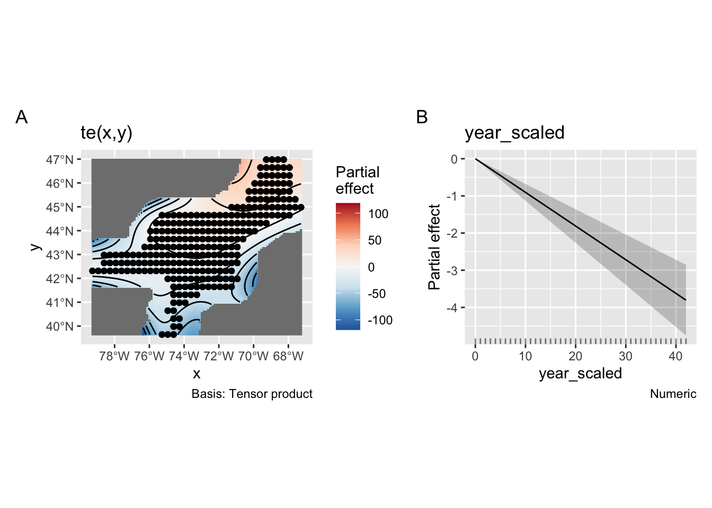
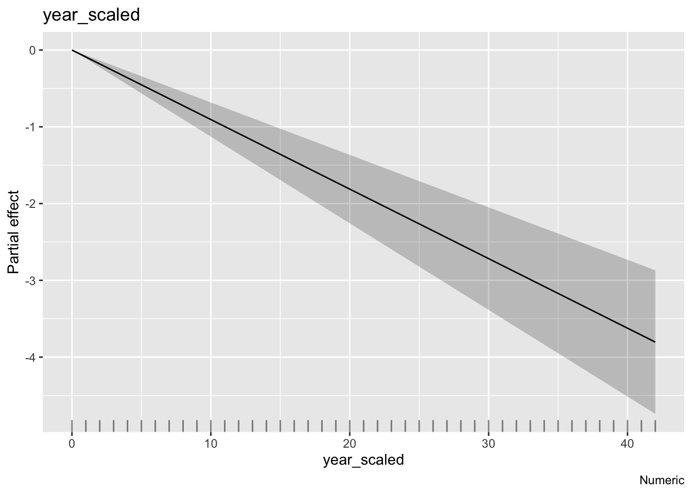
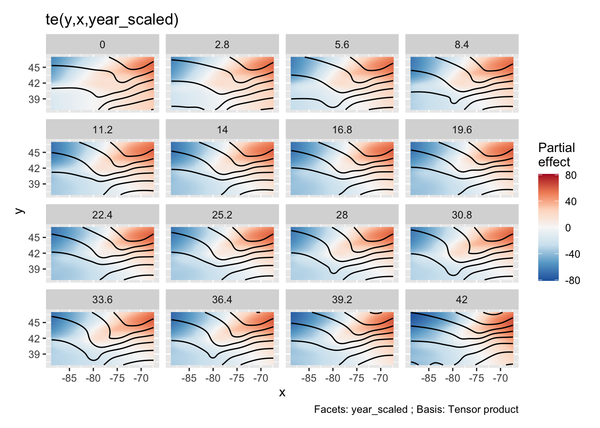
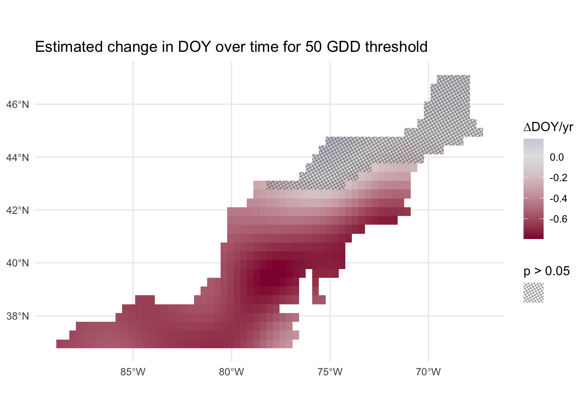
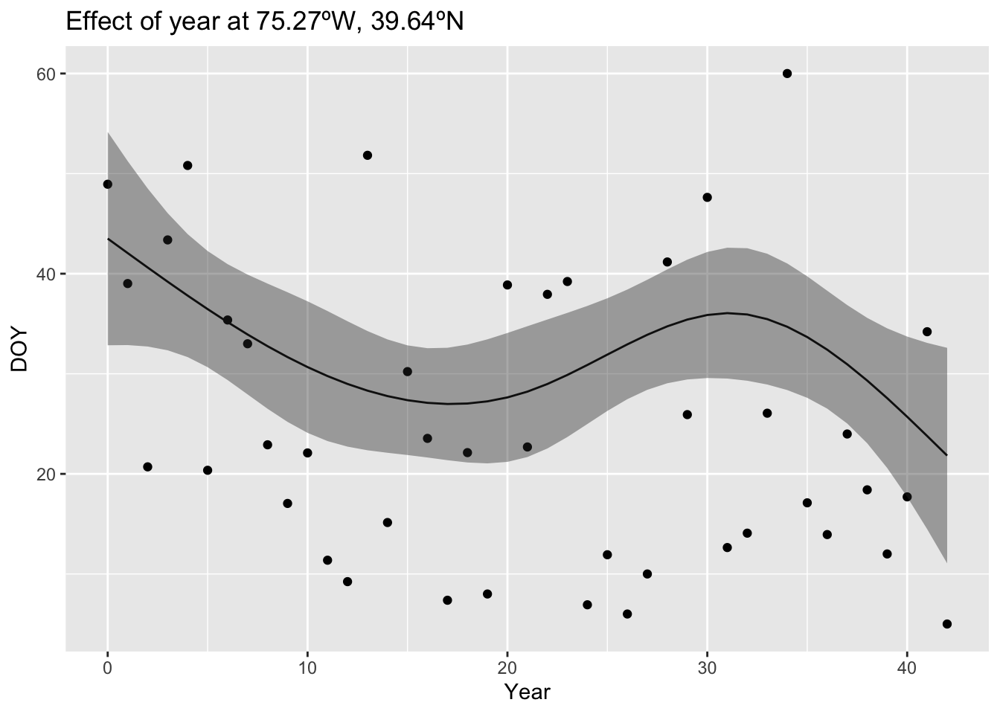

Spatial Trends Through Time
The goal is to understand spatial trends in phenology over time using data on the DOY that various threshold GDD are reached in the Northeastern US.
Pixel-wise regression
A simple option is to run a regression for every pixel in the map, with one data point per year per GDD threshold. We can then map the slopes easily (Figure 1).

However, we if we mask out areas that have slopes that are not statistically significantly different from zero, almost nothing is left (Figure 2). This is because the large number of p-values calculated must be corrected for false discovery rate, as they are not independent, leaving little statistical power to detect trends.
Spatial GAMs
Generalized Additive Models (GAMs) are an alternative method that can take into account the non-independence of spatial data, but are still able to model trends in phenology over time, potentially with different slopes by region.
GAMs fit penalized smooths to data capturing non-linear relationships with a statistically optimized amount of wiggliness. Two-dimensional smoothers can be used to capture spatial variation in data (with dimensions of lat/lon). Furthermore, we can model complex interactions including three-way interactions between latitude, longitude, and time.
Note
For these examples, data has been down-sampled for prototyping to speed up the model fitting process.
An simple example spatial GAM:
m1 <-
gam(
doy ~ year_scaled + s(y, x),
data = doy_df,
method = "REML"
)Coordinate system already present. Adding new coordinate system, which will
replace the existing one.


In my exploration, the GAM that had the best fit to data (by dAIC) was parameterized as follows:
m3a <- gam(
doy ~ te(y, x, year_scaled, d = c(2, 1), bs = c("sos", "cs")),
data = doy_df,
method = "REML"
)
summary(m3a)
Family: gaussian
Link function: identity
Formula:
doy ~ te(y, x, year_scaled, d = c(2, 1), bs = c("sos", "cs"))
Parametric coefficients:
Estimate Std. Error t value Pr(>|t|)
(Intercept) 76.7858 0.1378 557.4 <2e-16 ***
---
Signif. codes: 0 '***' 0.001 '**' 0.01 '*' 0.05 '.' 0.1 ' ' 1
Approximate significance of smooth terms:
edf Ref.df F p-value
te(y,x,year_scaled) 109.5 124 152.2 <2e-16 ***
---
Signif. codes: 0 '***' 0.001 '**' 0.01 '*' 0.05 '.' 0.1 ' ' 1
R-sq.(adj) = 0.625 Deviance explained = 62.9%
-REML = 46603 Scale est. = 214.6 n = 11309This fits a relationship between DOY to reach 50 GDD and a tensor-product interaction of lat, lon, and time where lat/lon are a represented by a two dimensional “splines on the sphere” smoother (which is built to work well with lat/lon data) and time is fit with a cubic regression spline with ‘shrinkage’. The smooth term is significant, although that doesn’t tell us if there are temporal trends, spatial trends, or both. A partial effects plot, such as in Figure 5, helps a little, but is still difficult to interpret.

Instead, we can exract the average slopes for each pixel and get 95% CI for those average slopes with the marginaleffects package and plot those on a map. Areas where the 95% CIs of the slopes overlap 0 can be shaded out like we did above with the non-significant p-values.

With the approach in Figure 6, we have the power to detect significant decrease in the DOY to reach 50 GDD over time. The caveat here is that the relationship fit to time is not linear (see Figure 7 for an example), and Figure 6 just shows the average slope over time.

Extension
It may be possible, and appropriate, to include all GDD thresholds in the same model, treating each threshold as a random effect allowing different slopes for each threshold. This would make sense since the DOY data for each threshold are not independent. However, I suspect this might create a model that takes days or weeks to fit with the full data.